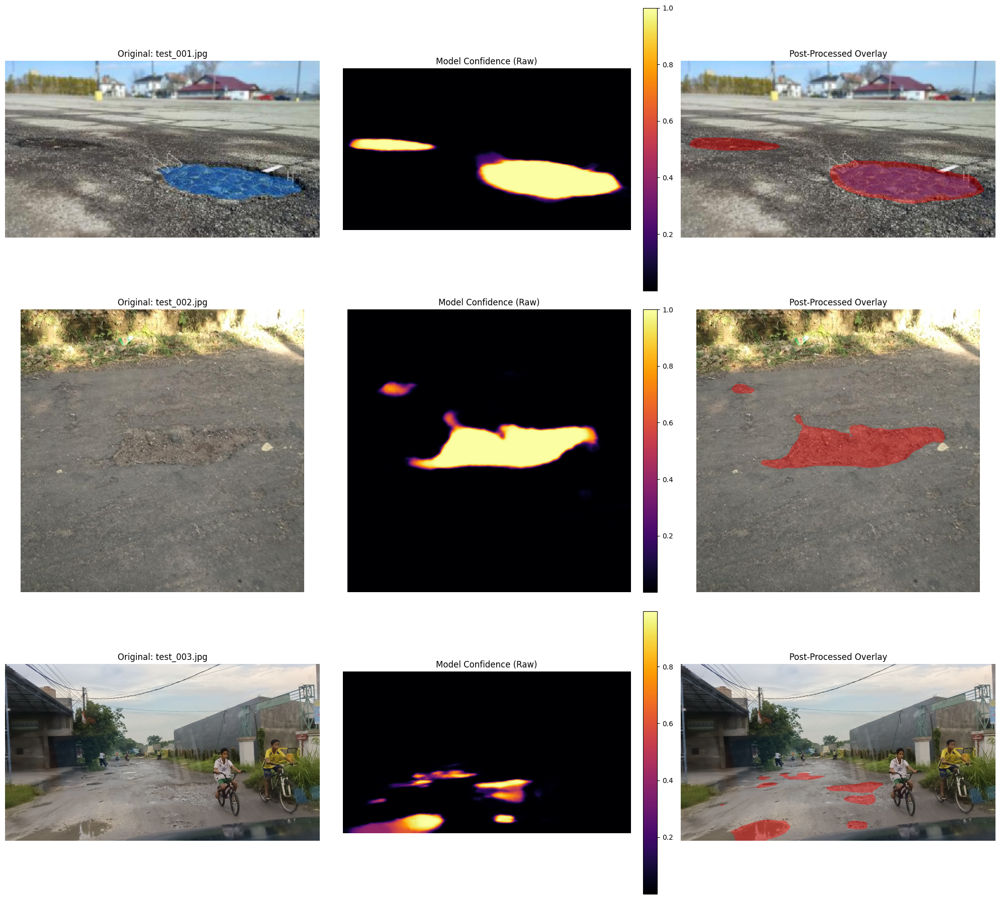

Data Science undergraduate at Universitas Brawijaya.
I take a question from raw data to an answer someone can act on: a stock target, a list of customers to call, a map of road damage, a reason a metric fell. Most of what I know comes from national competitions and projects I built to test my own claims.
Open to internships, freelance data work, and collaborative projects.
Selected work
Projects, shown through their results.
Each one starts from a concrete question and ends with a number I can point to in the repository.

The red overlay is the road area the model marks as damaged.
01 · Computer vision · ARA ITS 7.0
Pothole Segmentation
Can a model show exactly where road damage appears in a photograph?
SegFormer MiT-B5 trained on 498 labelled road images draws a pixel-level pothole mask instead of a yes-or-no label.
8thplace on the private leaderboard, Dice 0.804 (cross-validation Dice 0.83)
Average review score2017 → 2018
Feb–Mar 2018, down from 4.25 in May–Oct 20173.85
Late deliveries, before4.2%
Late deliveries, after18.8%
Share of drop from late orders63%
Median transit7.1 → 10.6 d
Orders analysed96,203
Shapley decomposition in SQL on the public Olist dataset.
02 · Analytics · SQL
Olist Review Drop Diagnosis
Why did a marketplace’s reviews fall, and what should be fixed first?
Late deliveries rose more than fourfold while the promised delivery time stayed the same. Three states held 59% of the extra late orders, so the recommendation is to fix those delivery lanes, not to move retention budget.
63%of the review drop traced to late deliveries
Overbooking backtestJan–Aug 2017
Net revenue, model rule€258k
Model rule€258k
Best average-rate rule€232k
Guests relocated147 vs 171
Daily MAE3.4 vs 3.9
Bookings audited119,390
Upper-bound backtest; relocation cost assumed at 2× room revenue.
03 · Prediction · Decision rule
Hotel Overbooking from Cancellation Risk
How many extra rooms can a hotel sell without bumping too many guests?
Most cancellations come early enough to resell. The costly ones are the 14.4 late cancellations and no-shows per day, so the model predicts only those and feeds a newsvendor overbooking rule.
+€26kover the best average-rate rule, with 24 fewer guests relocated
Inventory recommendation01 Oct 2017
Store 01Product 01
Stock target34 units
Forecast27.0
Safety buffer6.5
Observed sales21
Example from the held-out test period.
04 · Forecasting · Operations
Retail Demand & Inventory Planner
How much stock should a store prepare for each product?
A demand forecast plus an explicit safety buffer becomes a stock recommendation, served through a Streamlit app.
10.83%test WAPE, compared with 16.60% for the 7-day baseline
Customer risk assessmentTest example
97.9%churn risk
High priority
Recommended for retention outreach
1 month tenureMonth-to-monthNo online security
Observed outcome in the held-out data: churned.
05 · Classification · Customer retention
Telco Churn Retention
Which customers should a small retention team contact first?
Instead of stopping at a label, the model ranks customers by risk so limited outreach goes to the people most likely to leave.
74.8%precision among the top 20% highest-risk customers
Competitions
National data science competitions.
Tabular, time series, computer vision, and NLP. Rankings are from the final private leaderboard; scores are from my own validation unless marked.
8th
ARA ITS 7.0 · Institut Teknologi Sepuluh Nopember
Pothole segmentation on road photographs. SegFormer MiT-B5, Tversky loss for small potholes, 5-fold ensemble with flip TTA. Private Dice 0.804. Repository ↗
2026
9th
NSC 2026 · National Statistics Competition
Greenhouse humidity forecasting from sensor data. Rebuilt the team’s 4-model ensemble (LightGBM, CatBoost, ExtraTrees, XGBoost) into a reproducible pipeline with 8-fold chronological CV. Public RMSE 3.39.
2026
Finalist
DataQuest 5.0 · Universitas Airlangga
Life-satisfaction prediction for 95,609 survey respondents in a team of three. Expected-value thresholds added 0.06 QWK; a browser version of the model was pitched to the judges in the national final.
2026
Submitted
ACTION 2026 · Data Mining Competition
Multi-label topic classification of 23,297 Indonesian social-media comments with an IndoBERT, IndoBERT-large and IndoBERTweet ensemble. Macro F1 0.919 in topic-grouped 5-fold CV. Finalists announced 7 Nov 2026.
2026
Participant
FIK FAIR 2026 · Data Science Competition
Tabular regression. A Gaussian Process and kernel ridge hybrid on a Box-Cox target cut public RMSE from 7.99 to 7.72; a row-order feature was dropped as leakage.
2026
Participant
Satria Data 2026 · Big Data Challenge
Classification of 26,525 waste images into recyclable, electronic and organic with ConvNeXt-Tiny and EfficientNet. 97.3% validation accuracy.
2026
Participant
Gammafest
Football match score prediction scored on AW-MAE, with CatBoost and an ensemble on cleaned match data.
Participant
MCF · Insurance Claim Forecasting
Forecasting insurance claim frequency and policy premiums from claim and policy tables.
Participant
HoloMine Data Science Competition
Two tasks: breast cancer classification, and property price prediction from sales descriptions.
I study Data Science at Universitas Brawijaya (GPA 3.63/4.00). I like following a problem from raw data to an output another person can use, and I care about validation that would survive someone checking it: chronological splits for time data, grouped folds for grouped data, and a written limitation for every claim.
I work well in small teams and I am looking for internships and freelance work where I can learn quickly on a real problem.